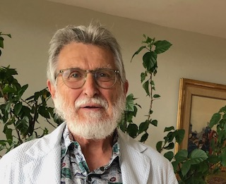
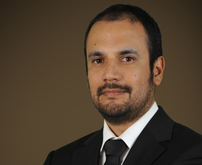
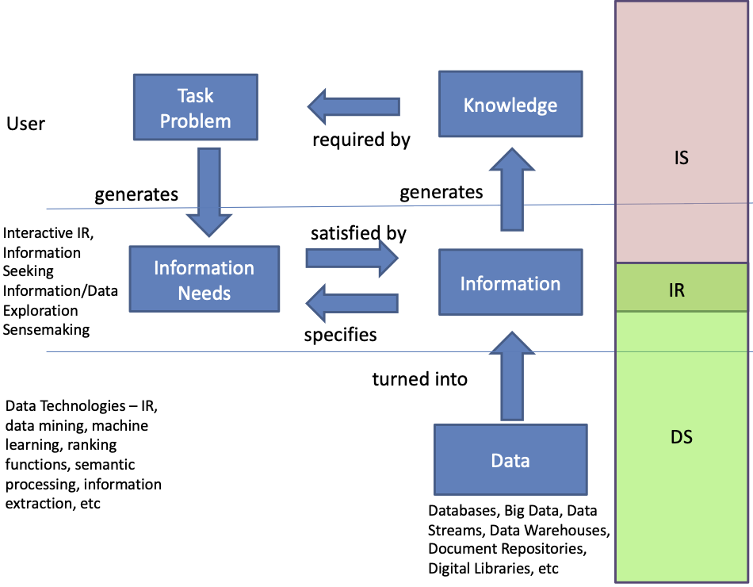
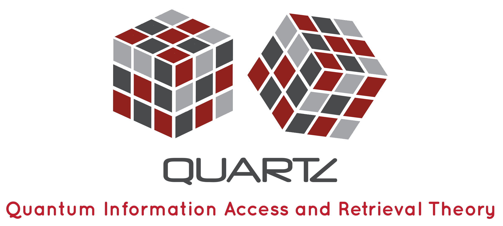

Bridging the Gap between Information Science, Information Retrieval and Data Science
An interdisciplinary SIGIR 2020 workshop for students, practitioners and researchers in Data Science, Information Retrieval and Information Science.
Keynotes by Nick Belkin and Carlos Castillo.
BIRDS 2020 Proceedings at CEUR.ws.
BIRDS YouTube playlist containing recordings of the talks.

Challenges and Opportunities for IS, IR & DS in an Era of Information Ubiquity
In the emerging technological and social-technical environment, people will be (to some extent, already are) constantly and ubiquitously emerged in a sea of information (or, data). This will be
Nicholas Belkin is Distinguished Professor of Information Science Emeritus, at the Department of Library & Information Science, Rutgers University, and Adjunct Professor at the Dhirubhai Ambani Institute of Information and Communication Technology. Previous to these appointments, he was Lecturer and Senior Lecturer in the Department of Information Science, The City University, London. He has held visiting positions at the University of Western Ontario, the Free University, Berlin, and the Institute for Systems Science, National University of Singapore. Professor Belkin was a Fulbright Fellow at the University of Tampere in 1996, and a Fulbright Senior Scholar in Croatia in 2003. He received his Ph.D. in Information Studies from the University of London (University College).
Professor Belkin has served as the Chair of the ACM SIGIR, and President of the Association for Information Science and Technology (ASIST). He is the recipient of the ASIST’s Outstanding Teacher award, its Research Award, and its Award of Merit, for outstanding contributions to Information Science. He is one of the founders of the “cognitive viewpoint” in information science, and is the co-author of one the first books to explicitly investigate and describe the process of interactive information retrieval. He is the author or co-author of over 200 journal articles, conference proceedings and book chapters, and has been identified variously as the first or second most highly cited scholar in Library and Information Science.
Professor Belkin has conducted ethnographic, sociological, behavioral and experimental research, including twelve years in the TREC Interactive Track. His most recent projects have focused on personalization of interaction with information, in particular, personalization of information retrieval based on searchers’ current and past behaviors, and on methods for evaluation of whole-session search. Professor Belkin’s research has been supported by many agencies, including NSF, Institute of Museum and Library Development Department NIST, US Department of Education, the British Library Research and Development Department, and NATO.

Fairness and Transparency in Ranking
Ranking in Information Retrieval (IR) has been traditionally evaluated from the perspective of the relevance of search engine results to people searching for information, i.e., the extent to which the system provides "the right information, to the right people, in the right way, at the right time." However, people in current IR systems are not only the ones issuing search queries, but increasingly they are also the ones being searched. This raises several new problems in IR that have been addressed in recent research, particularly with respect to fairness/non-discrimination, accountability, and transparency.
https://doi.org/10.1145/3308774.3308783
Carlos Castillo is a Distinguished Research Professor at Universitat Pompeu Fabra in Barcelona, where he leads the Web Science and Social Computing research group. He is a web miner with a background on information retrieval, and has been influential in the areas of crisis informatics, web content quality and credibility, and adversarial web search. He is a prolific, highly cited researcher who has co-authored over 80 publications in top-tier international conferences and journals, receiving a test-of-time award, four best paper awards, and two best student paper awards. His works include a book on Big Crisis Data, as well as monographs on Information and Influence Propagation, and Adversarial Web Search.
Carlos received his Ph.D from the University of Chile (2004), and was a visiting scientist at Universitat Pompeu Fabra (2005) and Sapienza Universitá di Roma (2006) before working as a scientist and senior scientist at Yahoo! Research (2006-2012), as a senior scientist and principal scientist at Qatar Computing Research Institute (2012-2015), and as director of research for data science at Eurecat (2016-2017).
He has served in the Program Committee (PC) or Senior PC (SPC) of all major conferences in his area (WWW, WSDM, SIGIR, KDD, CIKM, etc.), and is part of the editorial committee of ACM Transactions on the Web and ACM Transactions in Social Computing. He is General Co-Chair of ACM FAT*2020 and has been PC Co-Chair of ACM Digital Health 2016, 2017, and 2018 and of WSDM 2014; he co-organized the Adversarial Information Retrieval Workshop and Web Spam Challenge in 2007 and 2008, the ECML/PKDD Discovery Challenge in 2010 and 2014, the Web Quality Workshop from 2011 to 2014, and the Social Web for Disaster Management Workshop in 2015, 2016, and 2018. He is an ACM Senior Member, an IEEE Senior Member, and is accredited at the full professor level in Catalonia.
Recordings of the talks are available in the BIRDS YouTube playlist. Proceedings are available at CEUR.ws.
EDT: Eastern Daylight Time; BST British Summer Time; MESZ Middle European Summer Time; CST China Standard Time. Please note linked papers are preprints. Workshop proceedings will be published soon.
We will be running a workshop called BIRDS - Bridging the Gap between Information Science, Information Retrieval and Data Science - which aims to foster the cross-fertilization of Information Science (IS), Information Retrieval (IR) and Data Science (DS). Recognising the commonalities and differences between these communities, the full-day workshop will bring together experts and researchers in IS, IR and DS to discuss how they can learn from each other to provide more user-driven data and information exploration and retrieval solutions. Therefore, we welcome submissions conveying interdisciplinary ideas on how to utilise, for instance, IS concepts and theories in IR and/or DS approaches to support users in data and information access. BIRDS will be collocated with the 43rd International ACM SIGIR Conference on Research and Development in Information Retrieval (SIGIR 2020) in Xi'an, China. The workshop will be held fully online all day on Thursday 30th July 2020.
We are pleased to announce Salton-award winner Nick Belkin and Carlos Castillo have agreed to provide keynote talks at the workshop. We are also pleased to have further invited talks by Riccardo Guidotti and Xi (Sunshine) Niu.
The overarching theme of the BIRDS workshop is to look at how Data Science (DS), Information Retrieval (IR) and Information Science (IS) can complement each other by applying a more holistic approach to these disciplines that go beyond traditional DS or IR or IS alone.  BIRDS aims at extending the scope of current research to provide a view on data and information in all its quantity and variety through investigating user preferences and interaction. The cross-fertilization of DS, IR and IS that we want to address in this workshop goes three ways. BIRDS will focus on the utilization of DS methodologies in IR and IS, e.g. by integrating data mining, database concepts, heterogeneous data, data analysis, exploration and visualization techniques to IR and IS. In addition, we will look at how user-oriented concepts and theories from IS, for instance, human-centric information seeking & searching, cognitive models (such as Information Foraging Theory or the Principle of Polyrepresentation), etc, can be applied to enhance and complement the data-driven approaches in DS and IR. Finally, we will also examine how IR models and theory can apply to IS and DS, e.g. by introducing the concepts of vagueness and uncertainty, inherent in many IR models, to DS and IS.
To this aim, relevant topics of the workshop will be, but are not limited to:
IS models and theory applied to IR and DS
DS models and theory applied to IR and IS
IR models and theory applied to IS and DS
We welcome long and short papers as well as position papers. Authors of accepted papers will be invited to present their papers orally at the workshop. Please note BIRDS, like SIGIR 2020, will be fully online.
As we plan to publish the proceedings with CEUR Workshop Proceedings, all papers should be formatted in the Springer LNCS style. Please adhere to a page limit of 4-8 pages excluding references for position papers, 12 pages excluding references for long papers and 6 pages excluding references for short papers. Submissions will be peer-reviewed by at least three members of the programme committee.
To submit your paper, please use our Easychair submission link.
Important dates:
Programme Committee
Programme Chairs (Workshop Organisers)
The workshop is supported by the European Union ITN/ETN QUARTZ.
